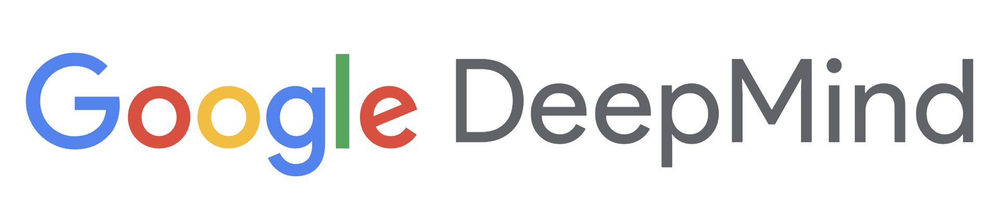

תעודת זהות
שנת הקמה: 2010
מדינת מקור: בריטניה / ארצות הברית
מייסדים: דמיס הסאביס, שיין לג, מוסטפא סולימאן
מוצרים מרכזיים: AlphaGo, AlphaFold, Gemini, Imagen, Veo
Global AI Company
מעבדת מחקר ופיתוח מרכזית של גוגל, המזוהה עם הישגים גדולים בלמידת מכונה, משחקים, מדע ומודלים רב־תחומיים.

שנת הקמה: 2010
מדינת מקור: בריטניה / ארצות הברית
מייסדים: דמיס הסאביס, שיין לג, מוסטפא סולימאן
מוצרים מרכזיים: AlphaGo, AlphaFold, Gemini, Imagen, Veo
השם DeepMind משלב את הרעיון של למידה עמוקה עם חקר תהליכי חשיבה ותבונה.
לאחר האיחוד עם פעילות ה־AI של גוגל, השם Google DeepMind מדגיש גם מחקר בסיסי וגם מוצרים בקנה מידה עולמי.
DeepMind נוסדה ב־2010 בלונדון ונרכשה על ידי Google בשנת 2014.
החברה התפרסמה בזכות הישגים שחיברו בין מחקר מתקדם, למידת חיזוק, ביולוגיה חישובית ומודלים גנרטיביים.
AlphaGo סימן רגע היסטורי שבו מערכת AI ניצחה שחקני Go מובילים, ו־AlphaFold הדגים השפעה מדעית רחבה בחיזוי מבני חלבונים.
2010: הקמת DeepMind.
2014: רכישה על ידי Google.
2016: AlphaGo זוכה לתשומת לב עולמית.
2020: AlphaFold מדגים פריצת דרך במדע חישובי.
2023 ואילך: Gemini הופך לחלק מרכזי מאסטרטגיית ה־AI של גוגל.
Google DeepMind חיברה בין מחקר בסיסי ליישומים מעשיים, והשפיעה על האופן שבו AI נתפס ככלי מדעי, טכנולוגי ותעשייתי.
הלוגו מוצג לצורכי זיהוי חינוכי ומוזיאלי בלבד.